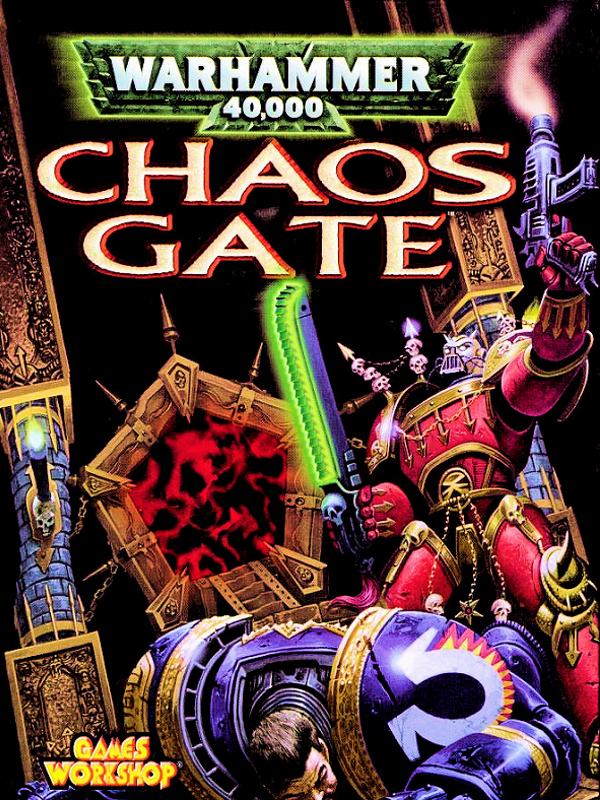

Warhammer 40,000: Chaos Gate
Details
|  | |
| Playtime | Not Played |
| Last Activity | Never |
| Added | 16/09/2024 23:34:26 |
| Modified | 18/05/2025 2:04:20 |
| Completion Status | Not Played |
| Library | Gog |
| Source | GOG |
| Platform | PC (Windows) |
| Release Date | 31/10/1998 |
| Community Score | 64 |
| Critic Score | |
| User Score | |
| Genre | Strategy Turn-based strategy (TBS) |
| Developer | Random Games |
| Publisher | Strategic Simulations |
| Feature | Multiplayer Single Player |
| Links | Wikipedia GOG Twitch |
| Tag | Classic Only On GOG Science Sci-fi Strategy Turn-Based |
Description

Set in the Warhammer 40,000 universe, Chaos Gate tells the story of an Ultramarines army led by Captain Kruger, as he attempts to recover the Concordat Chaosium, a pre-Horus heresy artefact, from the hands of Chaos Lord Zymran’s forces. With a mighty company under your command, you must engage in campaign scenarios and skirmishes, defeating the forces of Chaos and completing objectives to bring you closer to acquiring the artefact and defeating the heretics.
As a turn-based strategy with RPG elements, the game offers you the ability to fully customise your army between missions and augment your forces to ensure strategic superiority. With the might of a Space Marine company at your disposal, you can fully customise your squads down to the last marine, ensuring that only the Emperor’s finest are entering the fray. But be warned, for any suffered losses are not recovered between missions, so you must carefully decide which missions are worthy of your efforts.
As SSI’s second entry in the Warhammer 40,000 universe, Chaos Gate marries the lore of the 40,000 universe with the strategic depth of an SSI game and creates an engaging experience that further glorifies the Emperor and the Adeptus Astartes’ Legacy.
- Battle Chaos Space Marine forces and their daemonic allies across the galaxy in a Campaign of 15+ linked scenarios or explore randomly generated missions to gain power for your Ultramarine troops.
- Create and customize a squad from a Space Marine contingent of 50 different soldiers, each with unique characteristics and capabilities - including Terminators, Assault Marines and Devastator Squads.
- Build custom missions with the extremely flexible Mission Editor.
- Command the vehicles of the Warhammer 40,000 universe: Predator tanks, Rhino APCs, Land Speeders and Dreadnoughts.
Throwback Thursday Recommendation

We share the earnest reasons that make a classic game so dear to us!
Recommended by Paczyk, Bizdev Team: I remember playing Warhammer 40,000: Chaos Gate soon after I got into the Warhammer 40K hobby in 1999. The game resonated with me almost immediately -- I was hooked! The title captured the vibe of the grimdark universe perfectly. The story was decent and the gameplay was very enjoyable. Last but definitely not least, all that is accompanied by a masterful soundtrack that is still probably one of the most played scores over WH40K tabletop battles around the world (especially the Ultramarines Chant!). I launched the game again now, just to quickly make sure that I remember all the facts correctly before writing this... and I'm already in mission 3. The game still has it!
Click here to discover the Throwback Thursday collection of games.